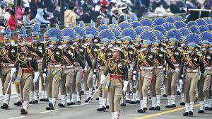
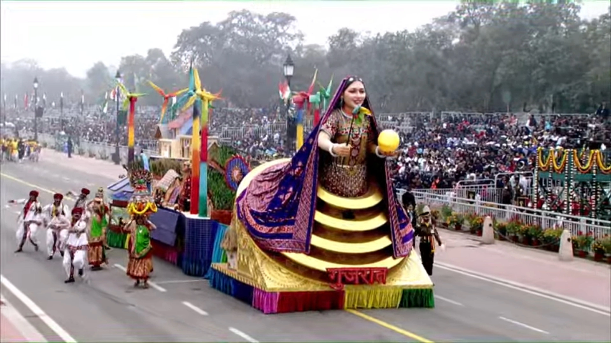

74th Republic Day of India
Azadi ka Amrit Mahotsav
New India's Amrit Kaal | India@75 |
Constitution Of India
A document of rights and law,
The Constitution guides us all.
It speaks of freedom and equality,
And ensures justice for all society.
The Constitution is our guide,
As we march forward, side by side.
It lays the foundation for our nation,
And ensures our rights and preservation.
We honor the Constitution today,
And pledge to keep its words and say.
For it is the backbone of our land,
And together, we'll forever stand.
As India observes its 74th Republic Day, the Kartavya Path in the national capital Delhi has been decked up for the parade. Security has been beefed up across Delhi and the national capital region (NCR), Imposing tight security, about 6,000 jawans, of paramilitary forces, NSG and Delhi Police, have been deployed for the January 26 parade. The Kartavya Path will be under surveillance by around 150 CCTVs, with high-resolution cameras.
The grand celebration, first in Amrit Kal, will be attended by at least 65,000 people. The Delhi Police said about 30,000 people can reach the parade venue through the metro this year.
Guests
President
Draupadi murmu
Chief Guest
Abdel Fattah El –Sisi
Kartavyapath's R-day Parade
Only Horsed Cavalry in the world march at Kartavyapath
61st Cavalry, the only serving active Horsed Cavalry Regiment in the world, at Kartavya Path on Republic Day. Their motto is 'Ashva Shakti Yashobal'
Indian Army showcases its might at Kartavyapath
The detachment of the Main Battle tank Arjun of 75 Armoured Regiment marches down the Kartavya Path. This is being led by Captain Amanjeet Singh.
The detachment of Quick Reaction Fighting Vehicle, led by Captain Naveen Dhatterwal of 3 Ladakh Scouts Regiment, marches down the Kartavya Path. The vehicle is ideally designed for troops operating in Ladakh, Sikkim and Arunachal Pradesh Marching contingents march down the Kartavya Path on the 74th Republic Day
Naval contingent of 144 young sailors march at Kartavya Path
The Naval contingent of 144 young sailors led by Lt Cdr Disha Amrith as Contingent Commander marches down Kartavya Path. The marching contingent for the first time in history consists of 3 women and 6 men Agniveers
All-Women CRPF contingent marches at Kartavya Path
President Murmu takes the salute of the all-women Central Reserve Police Force marching contingent at the Republic Day parade
Andhra Pradesh tableau
The tableau of Andhra Pradesh depicts 'Prabhala Theertham'- a festival of the peasantry during Makara Sankranti, at the Republic Day parade.
Assam's tableau
Assam's tableau shows Ahom warrior Lachit Borphukan on a boat and the view of Maa Kamakhya temple
Ladakh's Tableau
Based on the theme 'Tourism and composite culture of Ladakh', its tableau exhibits the essence of the UT's harmonious relationship with nature and the rest of the world
Gujarat's tableau
Gujarat's tableau shows the renewable sources of energy on the theme 'Clean-Green energy Efficient Gujarat', on Republic Day 2023.
Tripura's tableau
Tripura's tableau with the theme 'Sustainable Livelihood through tourism & organic farming in Tripura with active participation of women', displayed at the Republic Day parade. It also shows Mahamuni Buddha Mandir.
Jharkhand Tableau
The tableau of Jharkhand shows the famous Baidyanath Temple located in Deoghar. Lord Birsa Munda is depicted in the front of the tableau
J-K tableau
The tableau of Jammu & Kashmir with its theme 'Naya J&K' showcases the holy Amarnath Shrine and Tulip gardens and lavender cultivation
UP's tableau
Uttar Pradesh's tableau at the Republic Day parade showcases the three-day Deepotsava celebrated in Ayodhya
Karnataka tableau
Karnataka's tableau symbolically unveils the exceptional achievements of the state's 3 women achievers. Sulagitti Narasamma - a midwife, Tulsi Gowda Halakki - known as 'Vruksha Maate' & Saalumarada Thimmakka are noted names due to their selfless contribution to society.
Haryana Tableau
Haryana's tableau reflects design based on Bhagavad Gita. In its entirety, the tableau shows Lord Krishna serving as the charioteer of Arjun and giving him knowledge of Gita. The patterns on the sides of the trailer show various scenes from the battle of Mahabharat.

West Bengal
West Bengal shows its unique culture with Nari Shakti in front of President Murmuru
Daring motorcycle display by Corps of Signals Dare Devils
33 Dare devils make Human Pyramid on bike
Grand Finale
The grand finale of the 74th Republic Day parade comprises 45 IAF aircraft, one from Indian Navy and four helicopters from Indian Army.
R-Day parade concludes with national anthem
With the National Anthem, the Republic Day 2023 parade at Kartavya Path concludes.
Modi and India
PM Modi wears multicolour Rajasthani turban symbolising India's diverse culture on Republic Day
Spectacular show of ‘made-in-India’ weapons and display of Nari Shakti at Republic Day parade
mega air show involving Sukhoi 30 and Rafale
Baaz formation, Trishul formation, Vajraang formation, Netra Formation and many other formations by 50 aircraft and helicopters of the three forces. The air warriors exhibited their aerobatics and professional skills in the end of the Republic Day parade.
IAF
Indian Air Force showcases Tejas, Prachand and Netra
The Air Force tableau, based on the theme ‘Indian Air Force Power Beyond Boundaries’, displayed a rotating globe highlighting IAF’s expanded reach. It showcased Light Combat Aircraft Tejas MK-II, Light Combat Helicopter ‘Prachand’, Airborne Early Warning & Control aircraft NETRA and C-295 Transport aircraft. The tableau also displayed a team of GARUDs in combat gear with laser designation equipment and specialist weapons.
Indian Navy contingent features Dornier aircraft, indigenous Kalvari class submarines
The Indian Navy tableau featured a women aircrew of Dornier aircraft, highlighting all-women crew surveillance sortie undertaken last year. The main section of the tableau displayed the ‘Make in India’ initiatives of the Navy. It included a model of the new indigenous Nilgiri class ship with a Dhruv helicopter deploying marine commandos, models of indigenous Kalvari class submarines and autonomous unmanned systems being indigenously-developed under iDEX-Sprint Challenge.
Ministry of Culture

The Ministry of Culture’s tableau, which rolled down Kartavya Path for the 74th Republic Day celebrations Thursday, showcased the power of the feminine divinity. The theme was ‘Shakti Rupena Samsthita’ and through art and dance forms, ‘Devi’ was celebrated, Union Culture Secretary Govind Mohan said. ‘Nari Shakti’ was also the theme of the dance performance organised by the ministry, with 326 female and 153 male artists, as part of the Vande Bharatam programme, Mohan said. These 479 artists were chosen through a nationwide dance competition. The artists were in the age group of 17-30 years, and presented classical, folk and contemporary fusion dances, depicting the ‘power of women’ through five elements – earth, water, air, space and fire.
BSF
BSF on camel decorated colorfuly salutes President of India